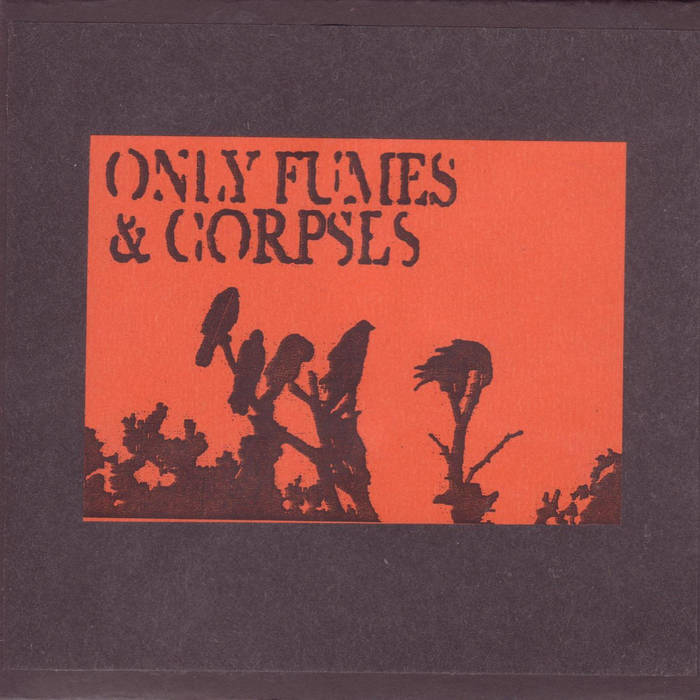
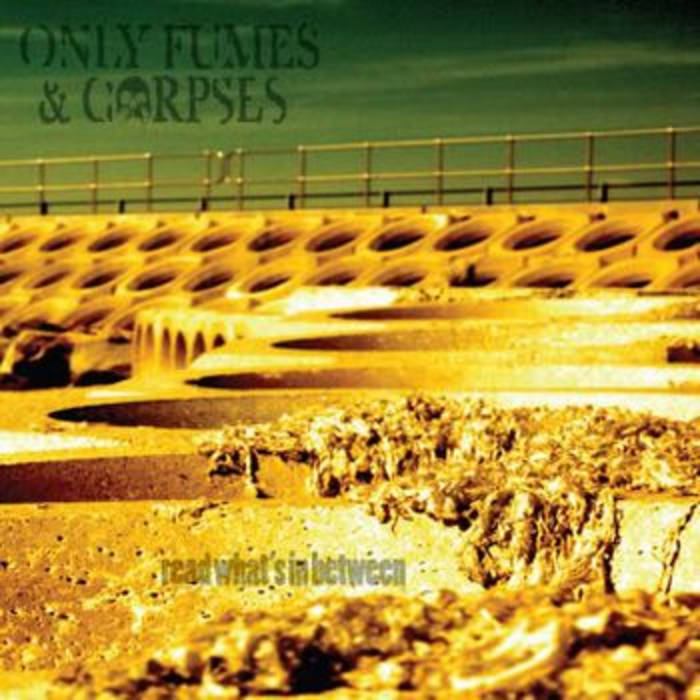
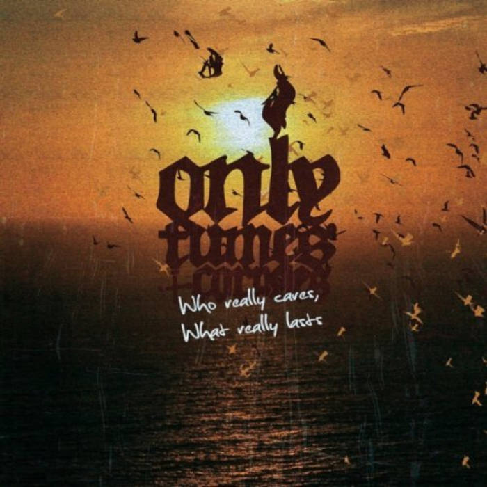
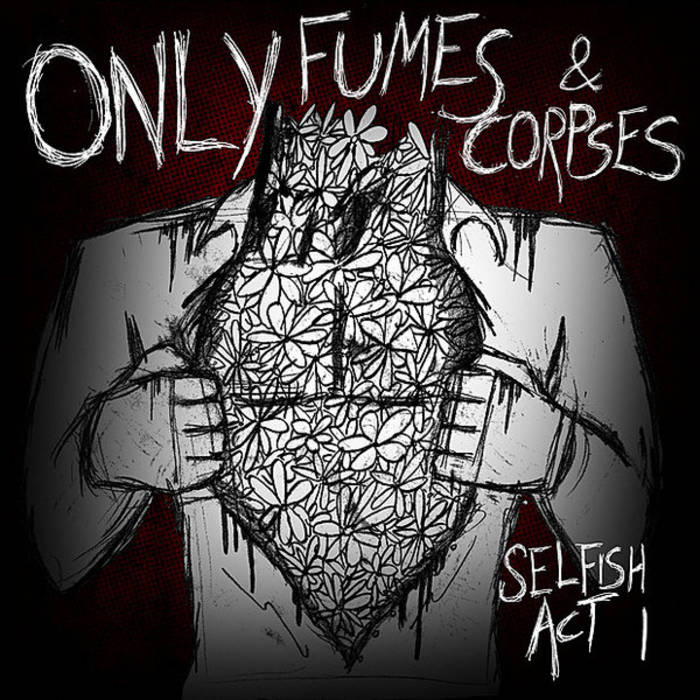
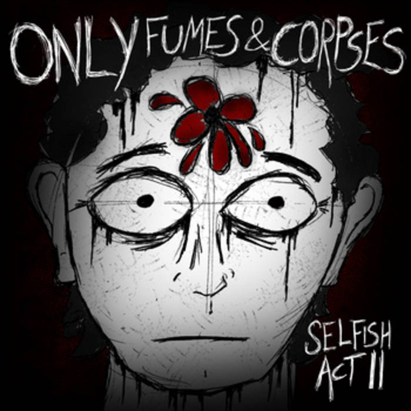

About
From the West coast of Ireland Only Fumes & Corpses are one of the country’s hardest working and persistent hardcore-punk bands.
Since forming in late 2005 the band have toured across Europe several times reaching as far as Finland and the Basque Country as well as numerous trips to the UK. They have now played over 200 shows earning a reputation as one of the most ferocious and energetic live bands on the circuit along the way. OF&C have shared the stage with the biggest names in hardcore but will never be tied down to the genre. No posing, no clothing company endorsements and certainly not following any punk ‘rules’, playing from the heart with a DIY spirit and ignoring trends and fads is what this band is all about.
Members
Andrew - Guitars
Benny - Drums
Daniel - Guitars/Vocals
Denis - Bass/Vocals
Momme - Vocals
Discography
Self-Titled - Demo
4 song demo self-released on CD
Read What's In Between - EP
8 song EP self-released on CD
Who Really Cares, What Really Lasts - Album
CD & Vinyl released by Lockjaw Records
Selfish Act I - EP
Download only, released by Lockjaw Records
Selfish Act II - EP
Download only, released by Lockjaw Records
Reviews
The Torchbearers for hardcore in their country – Big Cheese Magazine
Every time it finishes I realize that I'm standing in the middle of the room, fists clenched, eyes wide, delirious for more – so I start it up again and again and again, and every time I start it over I feel like I’m hearing an old favorite and the greatest new thing on the planet at the same time. – Mass Movement Magazine
The songs are short, punchy, violent outbursts and the high-speed nature keeps the pulse pounding throughout. As a soundtrack to leaping off speaker stacks or hurling Molotov cocktails at squads of Riot Policemen this will do the job perfectly – Punkprospect.com
Brutal, direct and uncompromising, there’s a mad-eyed, wild-dog ferocity to this. Teeth-bared, intense hardcore that rushes past with no grace; just jagged, uncomfortable destruction. Bare-bones, rattling hardcore punk that will rattle the teeth in your skull – Only Fumes & Corpses are a wrecking crew of haste and chaos. – keepitfast.com
One hell of an exciting EP to listen to...the fast paced movements throughout get you shifting, jumping, punching the air and thanking whatever God you believe in that there’s still proper, hard-faced and full on punk music being produced out there… will leave you wanting more, leave you shaking, and leave you knowing you’ve just stumbled upon one hell of a band…If you like proper HC-Punk, then this is a band you need to hear – Loud-stuff.com